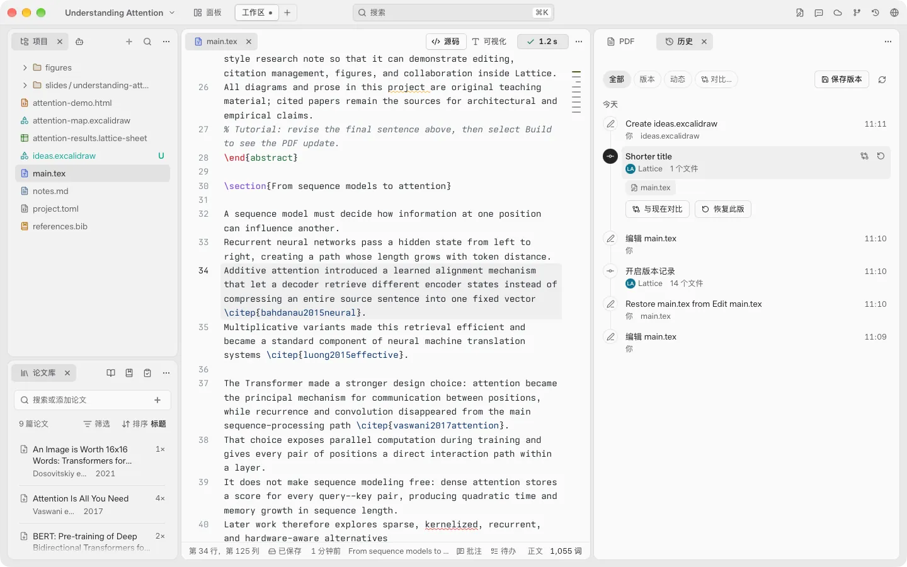
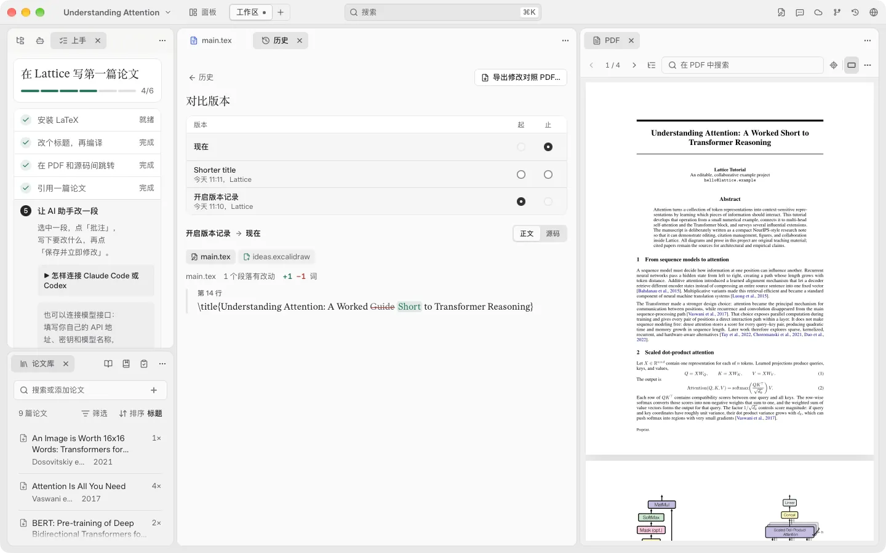

历史与版本对比
Lattice 记录项目里的每一处改动，不管是你、AI 助手，还是 Overleaf 上的合作者改的。点标题栏的 历史 按钮（时钟图标）或 面板 › 历史 打开。
撤回改动
全部 按时间倒序列出改动。点一条查看差异，再点 恢复文件，把文件恢复到这次改动之前的样子。恢复本身也是一条新记录，同样可以撤回。

动态 按事件（例如编译和助手的每轮操作）分组显示同一条时间线。
保存版本
命名版本基于 Git。第一次使用时，版本 页会提示 记录版本，把项目变成一个 Git 仓库（已经是仓库的项目直接使用）。之后：
- 保存版本：用你起的名字记录项目当前的状态。
- 每个版本都可以恢复，或者和现在对比。
版本对比
在 版本 中选择 对比…，然后在 起 和 止 中选两个版本（现在 指磁盘上的当前项目）。Lattice 列出所有改动过的文件。正文 显示改动的词，读文字更方便；源码 显示逐行差异。
导出修改对照 PDF… 通过 TeX 发行版中的 latexdiff 生成一份标出差异的 PDF。使用 BasicTeX 时，可能需要先运行 sudo tlmgr install latexdiff。

跟踪修订
跟踪修订 打开审阅模式：从此之后你的修改都会在源码中标出来，可以逐条或一次性接受、拒绝。不需要 Overleaf 也能用。